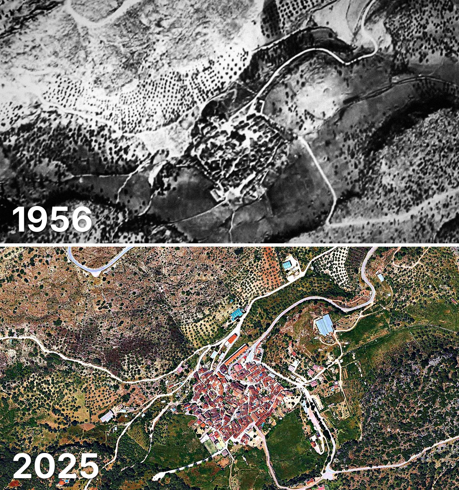

Alpandeire
Alpandeire tiene 264 edificios y 284 viviendas, y 242 habitantes en 2025. Al menos la mitad de sus edificios ya estaba en pie en 1956.
Cuándo se construyeron sus edificios
Desde 2015 se han terminado 1 edificios.

Las calles de Alpandeire con más viviendas
- Calle Fray Leopoldo · 54 viviendas
- Calle Doctor Duarte · 47 viviendas
- Avenida Andalucía · 44 viviendas
- Calle Barranco · 32 viviendas
- Calle Pósito · 28 viviendas
- Calle Moral · 22 viviendas
- Calle Pilar · 20 viviendas
- Travesía Francisco Sánchez Cárdenas · 6 viviendas
- Calle los Almendros · 4 viviendas
Toda la información de Alpandeire en CASAS.ES →
Fotos de Alpandeire para publicar
Estas fotos aéreas de Alpandeire, de 1956 y de 2025, se pueden publicar gratis en un periódico, un blog, la web del ayuntamiento o las redes, citando la fuente como se indica debajo.

Descargar: las dos juntas · 1956 · 2025 (JPG, 1.400 px de ancho)


Texto listo para publicar
Alpandeire desde el aire: así era en 1956 y así es en 2025
Las dos fotos muestran el mismo encuadre de Alpandeire con 69 años de diferencia: arriba, el Vuelo Americano de 1956; abajo, la foto aérea del PNOA de mayo de 2025. Hoy Alpandeire tiene 264 edificios y 284 viviendas, y 242 habitantes en 2025. La mitad de sus edificios es de 1900 o posterior. El 72 % de sus edificios ya estaba en pie antes de 1960.
Más datos de Alpandeire en CASAS.ES: casas.es/malaga/alpandeire
Cita para copiar
Fotos: Vuelo Americano Serie B (1956-57) y PNOA 2025, cedidos por © Instituto Geográfico Nacional (CC BY 4.0, scne.es). Datos y composición: <a href="https://casas.es/malaga/alpandeire/">los datos de Alpandeire en CASAS.ES</a>Descarga: municipios (CSV) · calles (CSV) · Wikidata (Q1624182) · cómo usarlos en Python (dev.to) · también en OSF, Figshare y B2SHARE